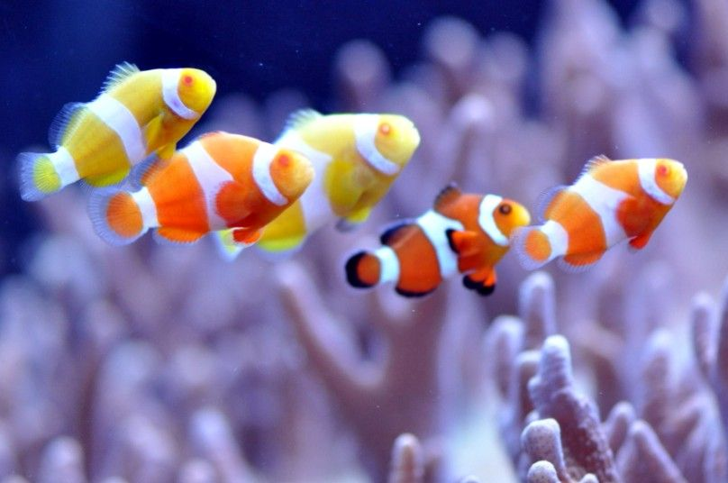

Clownfish

A layer of mucus on the clownfish's skin makes it immune to the fish-eating anemone's lethal sting.
Scientific Name: Amphiprioninae
Average Length: 11 centimeters
Average Lifespan: 7 years
Habitat: Tropical coral reefs
Bright orange with three distinctive white bars, clown anemonefish are among the most recogniable of all reef-dwellers. The reach about 11 centimeters in length, and are named for the multicolored sea anemone in which they make their homes.